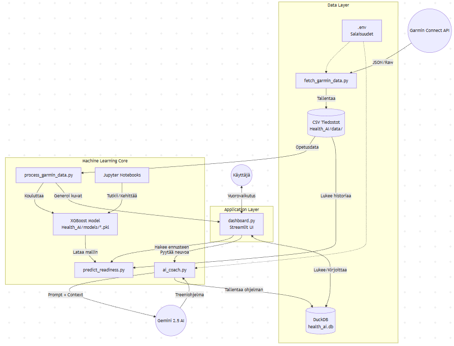

Arkkitehtuuri - Sami's AI Coach
Järjestelmän Yleiskuva
Sami's AI Coach on datalähtöinen valmennusjärjestelmä, joka yhdistää Garminin fysiologisen datan, koneoppimisen (XGBoost) ennustemallit ja generatiivisen tekoälyn (Gemini 2.5) tarjotakseen personoitua palautumisanalyysiä ja treenisuosituksia.
Arkkitehtuurikaavio (Mermaid)
graph TD
%% Ulkoiset Palvelut
Garmin((Garmin Connect API))
Gemini((Gemini 2.5 AI))
User((Käyttäjä))
%% Firebase Platform
subgraph "Firebase Platform"
FirebaseAuth[Authentication]
Firestore[("Firestore DB<br/>Goals / Workouts / Plans<br/>Metrics / Insights")]
end
%% Data Ingestion Layer
subgraph "Data Ingestion (Scripts)"
Fetcher[fetch_garmin_data.py]
Processor[process_garmin_data.py]
CSV[("CSV Cache<br/>backend/data/<br/>(Garmin History)")]
end
%% Machine Learning Core
subgraph "AI & ML Core"
XGB_Model[XGBoost Model]
Predictor[predict_readiness.py]
CoachLogic[ai_coach.py]
end
%% Moderni Käyttöliittymä
subgraph "Modern UI (Next.js)"
UI_Login[Login / Auth]
UI_Dashboard[Dashboard Page]
UI_Charts["Recharts<br/>(Recovery, Load, Performance)"]
UI_AICard[AI Insight Card]
end
%% Backend Services
subgraph "Backend API"
FastAPI[FastAPI Service]
end
%% Data Flow - External
Garmin -->|JSON| Fetcher
Fetcher -->|Tallentaa (Legacy)| CSV
%% ML Flow
CSV -.->|Opetusdata (Legacy)| Processor
Firestore -->|Metrics History| Processor
Processor -->|Kouluttaa| XGB_Model
%% Backend Integration
FastAPI -->|Lue Historia| Firestore
FastAPI -->|Lue/Kirjoita| Firestore
FastAPI -->|Trigger| Fetcher
FastAPI -->|Generoi| CoachLogic
CoachLogic -->|Prompt| Gemini
%% UI Integration
User -->|Kirjautuu| UI_Login
UI_Login -.->|Token| FirebaseAuth
User -->|Selaa| UI_Dashboard
UI_Dashboard -->|Render| UI_Charts
UI_Dashboard -->|Render| UI_AICard
UI_Dashboard <-->|"API Calls (Bearer Token)"| FastAPI
FastAPI -.->|Verify Token| FirebaseAuth
%% CSV is now just a cache layer for Garmin historical data
style CSV fill:#ffffcc,stroke:#ffaa00,stroke-dasharray: 2 2

Komponentit
0. Public Landing Page (Firebase Hosting) 🌐
- Landing Site (
landing_page/): Static HTML/CSS landing page for public marketing- Hero Section: "Your Personal AI Coach" with CTAs
- Features Showcase: 6 glassmorphic feature cards
- ECG Visualization: Heart rate monitor display
- AI Analytics: Machine learning brain visualization
- Download CTAs: App Store & Google Play badges
- Phone Mockup: App preview with live metrics
- Deployment: Firebase Hosting (global CDN, optimized caching)
- Live URL: https://personal-ai-coach-92c39.web.app
- Size: ~1.76 MB (HTML/CSS + 3 AI-generated images)
- Design: Dark theme, glassmorphism, responsive (mobile/tablet/desktop)
1. Moderni Käyttöliittymä (Next.js)
- Kehitysportaali (
frontend/): React-pohjainen sovellus, joka tarjoaa rikkaan käyttökokemuksen.- Dashboard: Päänäkymä, joka kokoaa kaiken tiedon.
- Goal Management: Tavoitteiden hallinta (CRUD) ja Race-tavoitteet.
- Training Calendar: Interaktiivinen kalenteri (Drag & Drop) treenien suunnitteluun.
- Recharts / Sparklines: Interaktiiviset kuvaajat ja minitrendit korteissa.
- AI Insight Card: Päivittäinen yhteenveto tekoälyltä.
- Authentication: Firebase Auth -integraatio sisäänkirjautumiseen.
- Toast Notifications: Reaaliaikaiset käyttäjäilmoitukset (react-hot-toast) - success/error feedback kaikille toiminnoille.
- Admin Dashboard: Järjestelmän valvonta ja käyttäjäpalaute (suojattu Admin-oikeus).
2. Firebase Platform (Pilvipalvelut)
- Authentication: Hallinnoi käyttäjien identiteettiä ja turvallisuutta (JWT).
- Google Sign-In: Käyttäjät kirjautuvat Google-tileillään
- Token-Based Security: Jokainen API-kutsu validoidaan Firebase ID Tokenilla
- Multi-User Isolation: Data eristetään automaattisesti
user_id-perusteella - 📖 Tekninen dokumentaatio: authentication.md
- Firestore: NoSQL-tietokanta, joka säilyttää:
- Käyttäjän tavoitteet (
goals) - Treenit (
workouts) - AI-suunnitelmat (
plans) - Profiilit (
users) - Garmin Credentials: Salatut Garmin-tunnukset (
users/{uid}/garmin_credentials/default)- Encryption: AES-256 (Fernet) - Salasanat luettavissa vain oikealla salausavaimella
- Security: Admin ei näe salasanoja ilman
ENCRYPTION_KEY-avainta - 📖 Setup Guide: garmin_setup.md
- Käyttäjän tavoitteet (
3. Backend & AI Core (Älykkyys)
- Backend API (
backend/): FastAPI-palvelin (v1.0.0), joka orkestroi liikenteen UI:n, tietokantojen ja AI-mallien välillä.- API Documentation: Interaktiivinen Swagger UI (
/docs) - Rate Limiting: Endpoint-kohtaiset rajat (slowapi)
- Authentication Middleware: Firebase token verification
- 📖 API Reference: API.md
- API Documentation: Interaktiivinen Swagger UI (
- Backend Scripts (
backend/scripts/): Datan haku- ja käsittelyscriptit (ETL).- Per-User Garmin Fetch:
fetch_garmin_data.pytukee käyttäjäkohtaisia tunnuksia
- Per-User Garmin Fetch:
- AI Coach (
backend/ai_coach.py): Yhdistää fysiologisen datan Gemini 2.5 -kielimalliin. Sisältää välimuistin (Firestore Cache) API-kiintiöiden hallintaan. - Machine Learning: XGBoost-mallit ennustavat tulevaa valmiustilaa (
readiness) historian perusteella.
4. Data Layer (Tietovarasto)
- Firestore (Primary): Pääasiallinen tietokanta kaikelle käyttäjädatalle:
- Goals, Workouts, Plans, User Profiles
- NEW: Garmin Metrics (
garmin_metrics/{user_id}/daily_metrics/{date}) - Per-user health data - Daily summaries: Body Battery, sleep, stress, steps, training load
- Time-series: CTL/ATL/TSB calculations for training load management
- CSV Cache (
backend/data/): Backward-compatible export for ML model training only- Used by
process_garmin_data.pyfor local model training - NOT used for production API endpoints (Firestore is source of truth)
- Used by
- User Isolation: Kaikki Firestore-kyselyt filtteröidään automaattisesti
user_id:llä (Row-Level Security).
5. Configuration & DevOps (Infrastructure)
- Environment Configuration:
backend/config.py(Pydantic Settings)- Development:
APP_ENV=development(Debug ON, Loose CORS) - Production:
APP_ENV=production(Debug OFF, Strict CORS) - Validation: Type-safe configuration loading from
.envor environment variables
- Development:
- Documentation Site: MkDocs + Material Theme
- Source:
Docs/directory - Auto-Deployment: GitHub Actions builds and deploys to GitHub Pages on push
- URL: https://Samih.github.io/health_ai/
- Source:
- CI/CD Pipeline: GitHub Actions
- Tests: Runs backend (pytest) and frontend (jest) tests on push
- Linting: Ruff (Python)
- Docs: Auto-deploy documentation
- Docker Build & Push: Automates backend image builds to GHCR
6. MLOps (Machine Learning Operations)
- MLflow Experiment Tracking:
- Database: SQLite (
backend/data/mlflow.db) - Experiment:
xgboost_readiness_prediction - Logged Data: Parameters (hyperparameters), Metrics (R², MAE, RMSE), Artifacts (plots, models)
- Database: SQLite (
- Model Registry: Version control for trained XGBoost models
- Benefits:
- Compare hyperparameter configurations
- Track model performance over time
- Reproducibility and rollback capability
- MLflow UI:
mlflow ui --backend-store-uri sqlite:///backend/data/mlflow.db
Teknologia-stack
- Frontend: Next.js 14, React, Recharts, Tailwind CSS
- Landing Page: Static HTML/CSS (Inter font, glassmorphism effects)
- Backend: Python 3.12 (FastAPI), Pandas, XGBoost
- AI/ML: Google Gemini 2.5 Flash, XGBoost Regressor
- MLOps: MLflow (Experiment tracking, Model registry)
- Data: Firestore (Primary), CSV (Garmin Cache)
- Infra: Docker Compose, Firebase Hosting, GitHub Actions
📖 Katso myös
- API.md - Complete API reference (25+ endpoints, examples, rate limits)
- authentication.md - Käyttäjien tunnistautuminen ja multi-user data isolation
- garmin_setup.md - Garmin credentials encryption setup & troubleshooting
- production_roadmap.md - Skaalautuvuussuunnitelma (0 → 10,000 käyttäjää)
- sami_memo.md - Kehityspäiväkirja ja projektin historia
Last Updated: 2026-01-29
API Version: 1.0.0
Architecture Status: Production Ready (MLOps-Enabled)
Landing Page: 🌐 https://personal-ai-coach-92c39.web.app